Approximate time: 45 minutes
Learning Objectives:
- Understand the type of data that is accessible from Gene Expression Omnibus (GEO)
- Demonstrate how to navigate the GEO website and FTP server
- Use the command-line interface to copy over data from GEO
Accessing public NGS sequencing data
All types of next-generation sequencing (NGS) analyses require access to public data, regardless of whether we are analyzing our own data or the data output from someone else’s experiment. Reference data is available online as well as the experimental data from many published (and unpublished) studies. To access this data generally requires the basic knowledge of the command line and an understanding about the associated tools and databases.
To find and download NGS experimental data and associated reference data, we will explore several different repositories. For accessing experimental data, we will explore the Gene Expression Omnibus and the Sequence Read Archive repositories. For finding reference data, we will navigate the Ensembl database, iGenomes and Wormbase. We will focus on these repositories; however, other databases are also useful for exploring and downloading experimental and reference data, including UCSC Table Browser and the NCBI Genome, and we encourage you to explore these more on your own.
Gene Expression Omnibus
To find public experimental sequencing data, the NCBI’s Gene Expression Omnibus (GEO) website is a useful place to search. The requirement for many grants is that experimental data be uploaded to GEO and the sequence read archive (SRA); therefore, there are quite a few datasets on GEO available to search. The interface for finding data on GEO is relatively user-friendly and easily searchable.
Finding and accessing data on GEO
Searching GEO
To search GEO for particular types of data is relatively straight forward. Once on the GEO website there are multiple different options for searching datasets.
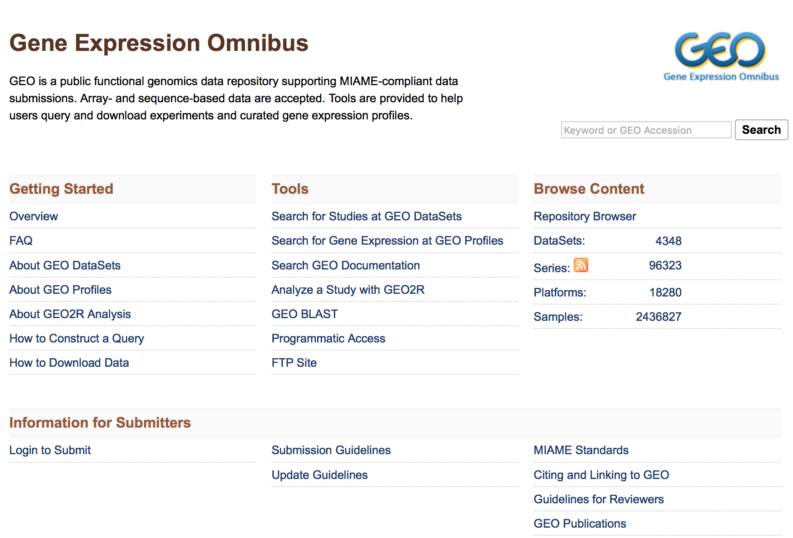
The most straight-forward method can be found by clicking on ‘Datasets’ under the ‘Browse Content’ column.
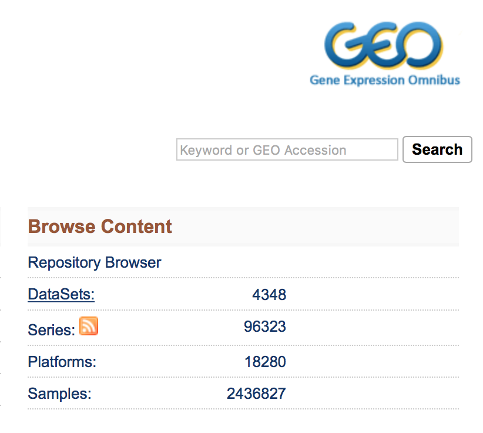
The ‘Datasets’ link will open the GEO Dataset Browser; click on ‘Advanced Search’.
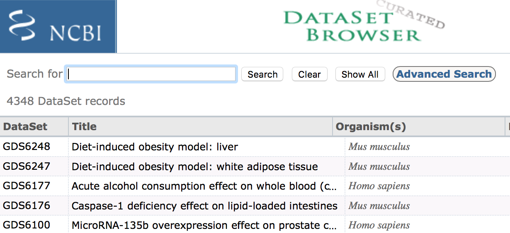
All results will appear in a new window with clickable filters on the left-hand side. You can choose the filters, such as ‘Organism’ (human, mouse), ‘Study type’ (Expression profiling by high throughput sequencing), ‘Publication dates’ (1 year), etc. to filter the data for the desired attributes.
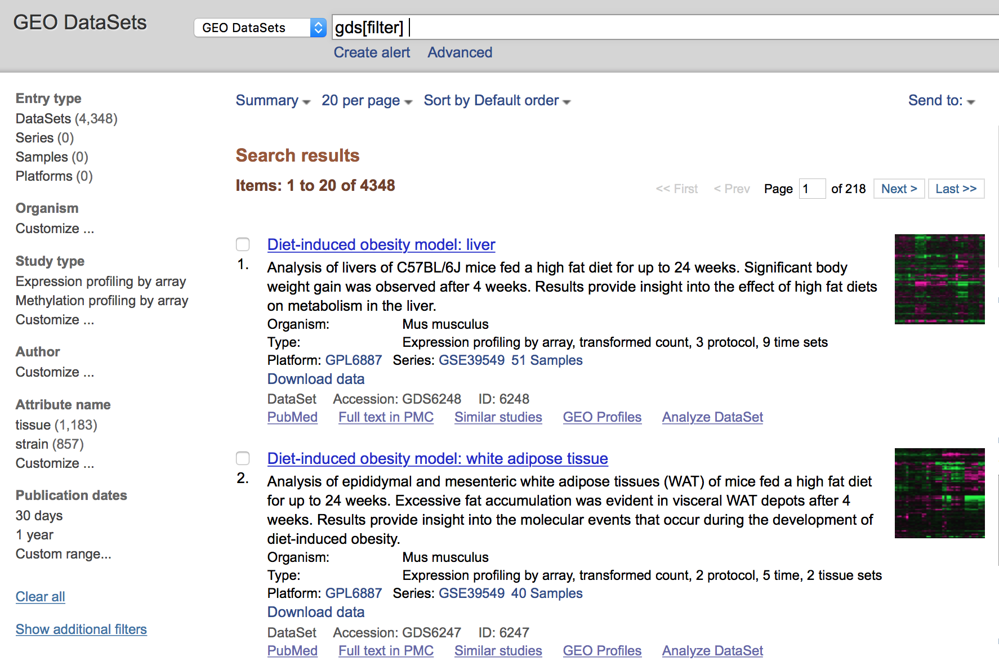
Finding GEO data for a particular publication
To find data from a published paper on GEO, the paper will often provide the GEO accession number. For example, let’s find the data associated with the paper, “MOV10 and FRMP regulate AGO2 association with microRNA recognition elements”. First, we can navigate to the article.
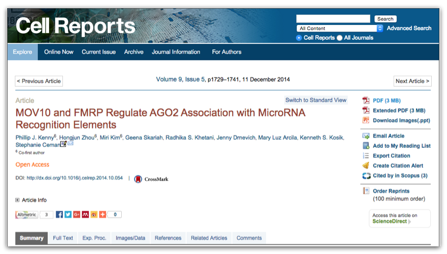
Then, we can search for the term “GEO”; different papers have different requirements for where this information is located. In this article, it is available in a separate section entitled “Accession Numbers”.
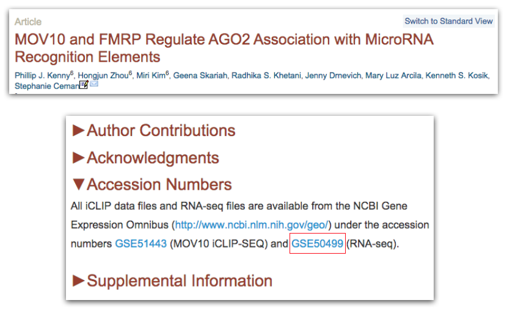
By clicking on the GEO accession number for the experiment of interest, the GEO page for this experiment will open.

The GEO page contains information about the experiment, including:
- an experimental summary
- literature citation
- contact information
- links to the sample GEO pages
- link to the SRA project containing the raw FASTQ files
- metadata (matrix file)
- supplementary data
If we were interested in downloading the raw counts matrix (GSE50499_GEO_Ceman_counts.txt.gz), which gives the number of reads/sequences aligning to each gene, then we could scroll down to supplementary data at the bottom of the page.
We could download this file by clicking on the ftp link. In addition to the counts matrix file, we would probably also want the metadata for the file to know which sample belongs to which conditions by clicking on the “Series Matrix File(s)” link.
NOTE: The “Series Matrix” metadata file is a bit congested, and it may be easier accessing the metadata from the SRA instead as discussed later.
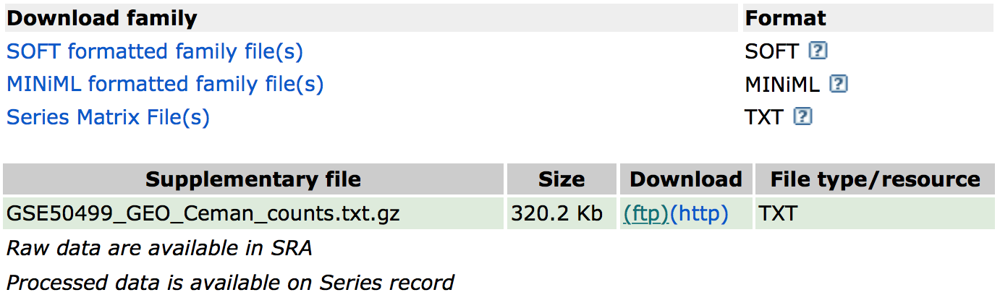
Now that we have these files, if we wanted to perform differential expression analysis, we could bring them into R to perform some data wrangling and analysis.
Using the command line to download from GEO
While navigating the GEO website is a perfectly fine way to download data from GEO, oftentimes you may want to download multiple files at the same time or download large files that you don’t want to store on your personal computer. Generally, the best way to do this is by using a high-performance computing cluster, such as FAS Odyssey or HMS O2.
Downloading on a cluster
We will demo downloading data to a high-performance computing cluster using the Odyssey cluster.
To access the Odyssey cluster we need to use the secure shell (ssh) command using the ‘Terminal’ program for Macs or ‘GitBash’ for Windows. In the console from these programs, type:
$ ssh username@o2.hms.harvard.edu
Odyssey will then ask for the associated password and verification code (2-factor authentication). For more information on 2-factor authentication, please see the Odyssey resources.
Now we are logged onto a ‘login’ computer, but to perform any work we should transfer to a ‘compute’ computer by running the srun command.
$ srun --pty -p interactive -t 0-12:00 --mem 8G /bin/bash
This will transfer us onto a ‘compute’ computer, where we can do our work.
Now, we can download our data to an appropriate directory. Good data management practices will ensure we have an organized project directory for our analysis. We can create and change directories to the folder to which we plan to download the data.
$ mkdir -p mov10_rnaseq_project/data/counts
$ cd mov10_rnaseq_project/data/counts
Now that we are ready on the cluster, we can find the link to transfer the data using GEO’s FTP site. To access the FTP site, return to the GEO home page and under the “Tools” header, click on “FTP site”.
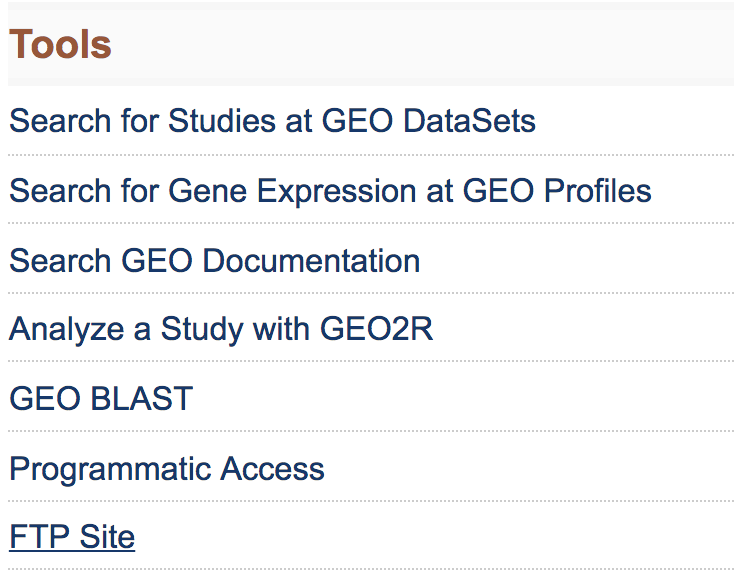
This will take you to the directory to access all GEO data.
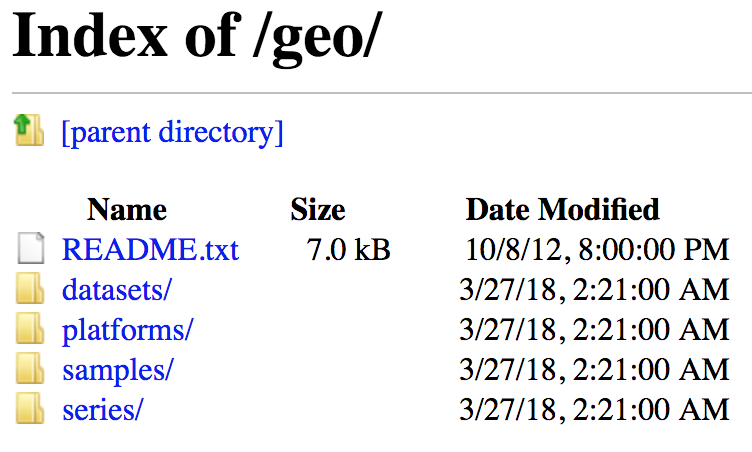
To download the data associated with the paper, “MOV10 and FMRP Regulate AGO2 Association with MicroRNA Recognition Elements”, use the GEO ID given in the paper, GSE50499.
- Navigate the FTP site to the
series/folder - Find the
GSE50nnn/directory - Enter the
GSE50499/folder - The data files available are in the
suppl/directory. If we choose to download all associated data, we can download the entiresuppl/directory -
Use the
wgetcommand followed by the link to thesuppl/directory (right-clicking and choosing ‘Copy Link Address’).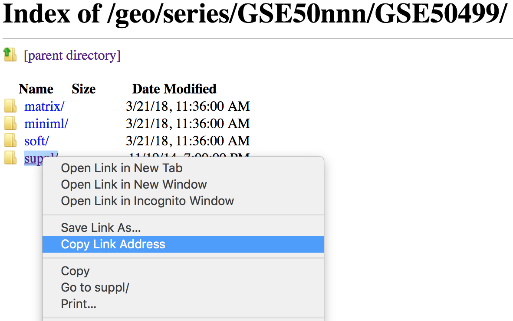
Using the
wgetcommand to copy this directory requires a few options. Since we are copying a directory, the-r/--recursiveoption is required. Also, the-np/--no-parentoption and the-ndfor no directories is used to avoid thewget’s default copying of any parent directories.$ wget --recursive --no-parent -nd ftp://ftp.ncbi.nlm.nih.gov/geo/series/GSE50nnn/GSE50499/suppl/
NOTE: Sometimes the
wgetwill result in an extra file calledindex.htmlto be downloaded as well. If you would prefer not to download the automatically generatedindex.htmlfile, then another useful flag would be-R/--reject.```bash $ wget -r -np -nd -R "index.html*" ftp://ftp.ncbi.nlm.nih.gov/geo/series/GSE50nnn/GSE50499/suppl/ ```
Exercises
-
What command would we use to download all data for the study:
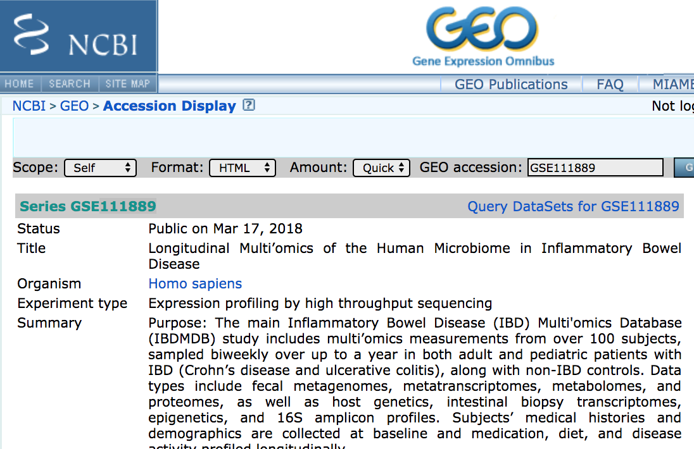
NOTE: If you wanted to unpack the
.tarfile and decompress the.gzfiles, you could use the following commands:$ tar -xvf GSE111889_RAW.tar $ for all in *.gz; do gunzip $all; done -
How would you download the associated metadata?
Downloading on a local computer
If we are downloading a small file(s) to use on our personal computer, then it makes sense to directly download to our computer. Unfortunately, wget is not automatically available using the Mac Terminal or using GitBash on Windows. However, the curl command is available to transfer data from (or to) a server. We can download individual files using curl by connecting to the FTP:
curl -O ftp://ftp.ncbi.nlm.nih.gov/geo/series/GSE50nnn/GSE50499/suppl/GSE50499_GEO_Ceman_counts.txt.gz
Unfortunately, we cannot download folders with curl. However, for MacOS, the Homebrew package manager is a wonderful way to install programs/commands that may not be installed on your operating system, such as wget.
Also, it’s worth noting that we don’t need to navigate the FTP site to find individual files to download, since the link on the GEO site should list a link to the file. By right-clicking on the ftp link on GEO, you can copy the ‘ftp address’ to use with the wget or curl command.
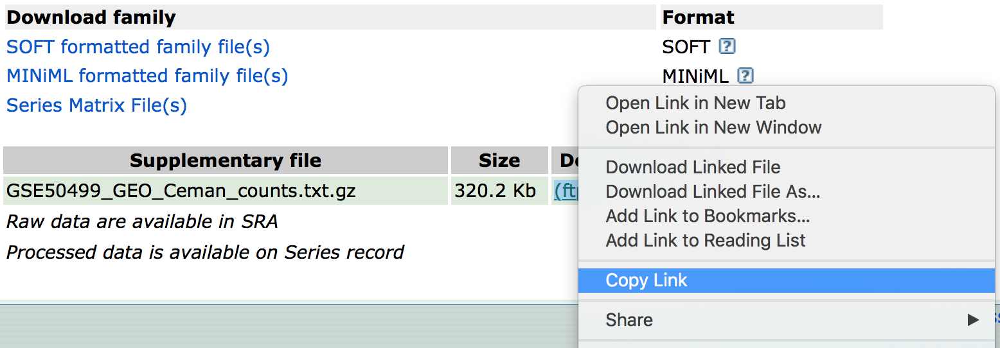
This lesson has been developed by members of the teaching team at the Harvard Chan Bioinformatics Core (HBC). These are open access materials distributed under the terms of the Creative Commons Attribution license (CC BY 4.0), which permits unrestricted use, distribution, and reproduction in any medium, provided the original author and source are credited.